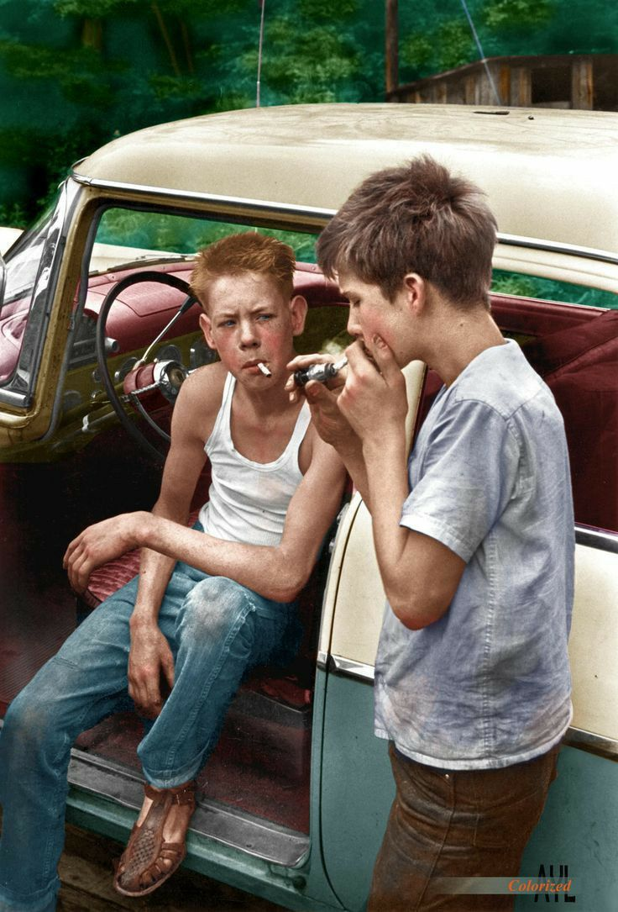
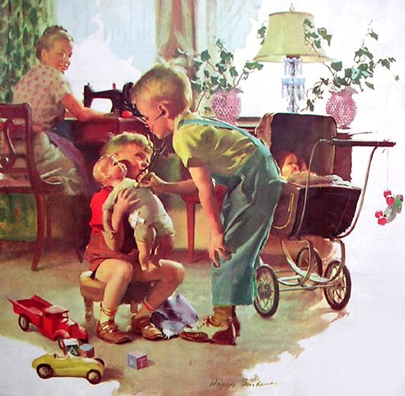
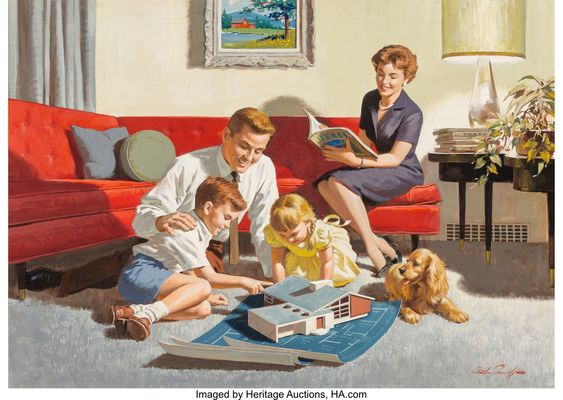
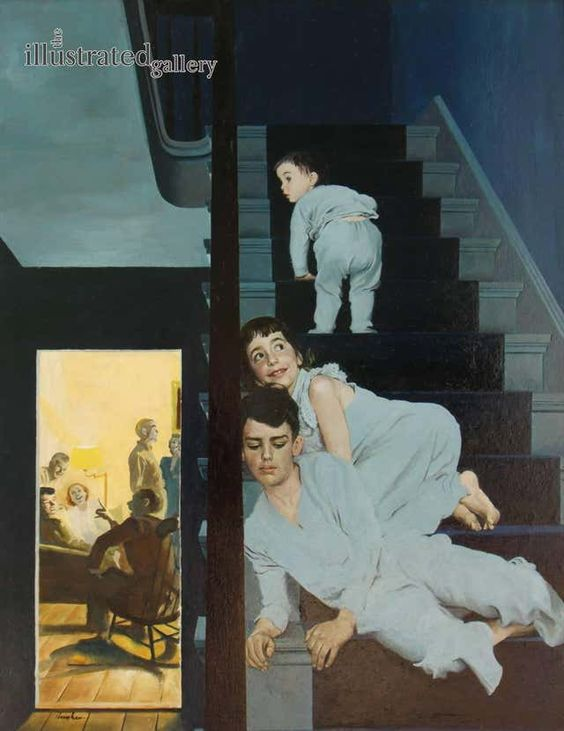
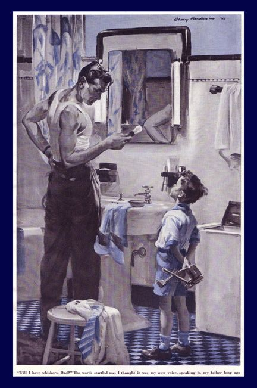
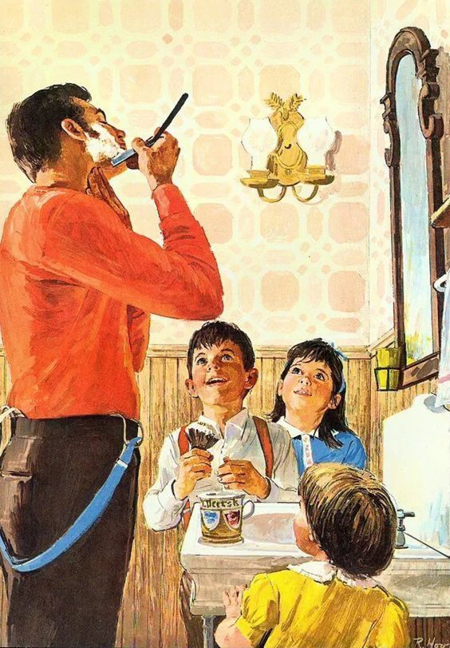
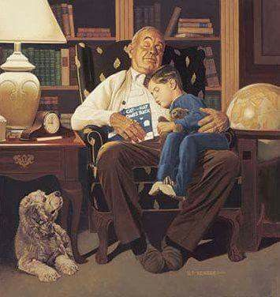
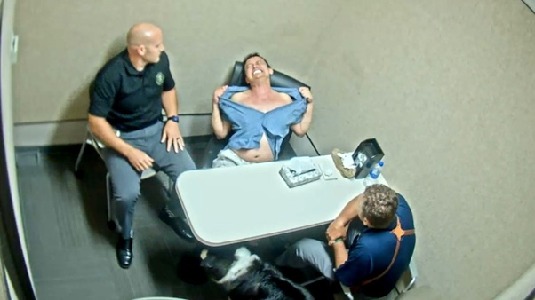
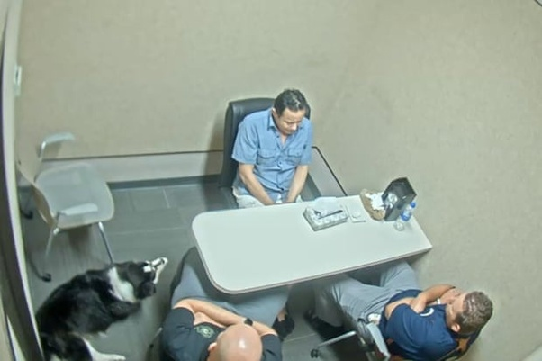

As I churn through my daily YouTube feed, I watch the collapse of the United States in real time.
I see the store closings, the big box retailers shutting down.
I watch the empty storefronts and the tent cities.
I watch the woke wars and the fiasco of male and female relationships.
I see the collapse of American industry and the service sector. And I watch all of this being documents by YouTubers.
And the thought that comes to mind is John Titor.
Not on his “predictions” about “our” future. Not about the Civil war, followed by a global thermonuclear war.
Not about the details of his machine. No.
I am reminded about how he described the world where he came from; 2036 (as I recall). He said some things that instantly came to mind as I watch these videos.
- Firstly, the fact that there are videos. YouTube or Tictok. Doesn’t matter. The decline of mainstream media, and Hollywood and being replaced by home-grown video productions is one of his sport on predictions.
Yes. But it’s much more than that.
- He never talked about fast food restaurants from his time. It’s not that he glossed over them. He didn’t mention them at all. And today, we are starting to watch the fast food franchises and small dining franchises disappear and shut their doors. From Appleby’s to Denny’s. All are shutting down.
This is disturbing. It really is.
Not that McDonald’s is closing stores, but that this “time traveler” seemingly came from “our” future where fast outside dining was not that prevalent.
- The talked about the music that he liked, and what his friends listened to. He described it as natural music with heart-felt singing, and natural instruments. One gets the idea of bluegrass or country or folk music. But now, seeing the impact of Oliver Anthony and his special “type” of sound… it all seems to fit into place.
Again, not really a game-changer or an ah-ha moment, but Lordy! Twenty Five some years ago, no one could have even remotely predicted the impact that Oliver Anthony has had on American society and the music industry.
- The decline of the grand big-box stores. John Titor said that the first time that he went into one such store, he about broke down and cried. He had never seen so much consumerism on display, and he considered it such a waste.
When I first read what he said and wrote, my natural assumption that a nuclear war erased all the stores and that led to their collapse.It was because of the war; and the nuclear fire erased everything…
Now I am seeing something different.
We are watching these big retailer operations shut down one by one. Organized crime plus inflation plus trade restrictions and pretty soon, it’s all over. It’s not there yet, but add another round of tariffs and it will happen.
Oh, he said many other things, of course.
But the point that I am trying to make here is that the world, and the time-table that he described [1] did not match our world-line, however, [2] the events RELATED to his home life seems to be taking place right now in real time.
I wonder…
His depiction of an American civil war, followed by a Russian nuclear exchange does not seem to be in the making. A war with Russia… yes. A conflict with China… yes. A collapse of American domestic society… yes.
Perhaps in this timeline, the attributes of the world-line that he described is happening regardless of the details and related war-like events that he described twenty five years ago. The details on the war in every detail seems to be of no consequence. But the “broad brush” descriptions of 2026 seems to be hitting the target square on the dot.
Or in other words.
Massive nuclear war involving Russia, but the actual details about Europe, China, and the rest of the world is sketchy. And as I suspect, a product of the times when he made the initial statements on coast-to-coast.
American civil war, but the details seemingly are alien to this world-line.
My gut feeling is that the grand events are still in process in this world-line but the events are substantially scrambled beyond recognition. Interesting times, for certain.
Today…
ALEKSANDR LUKASHENKO:
“We are doing everything they [Western countries] did before us and are doing now.
They are training foreign pilots.
In part, the Americans are training German pilots in Germany to fly with nuclear weapons carriers – with bombs if they fly planes and with missiles.
We are not doing anything special, we are getting ready, undergoing training. We must be prepared.
The world is unstable and dangerous.
We cannot afford to miss this strike.
We cannot afford to miss an attack as we did in the middle of the past century.
We will not allow this to happen and they must know about this.
But we are not fuelling tensions.
We do not need war.
Today we talked only about peaceful prospects.
I am grateful to the President of Russia for including the head of the group of strategic initiatives in his delegation.
He told us what is even hard to comprehend, but this is our near future.
So we stand for peace but keep our powder dry.
Nothing special.”
BREAKING: Sparks Fly As Cruz Confronts Blinken Over ‘Worst Foreign Policy Disaster Of Modern Times’
The first two minutes are GOLD.
What do most people get wrong about understanding other countries and cultures?
Comparing other countries and cultures with each other is a lost cause; you can only understand a culture, people and history on its own terms.
When I read many question on Quora, there are many like:
- Why don’t the Chinese rise up against oppression from the Chinese government?
- Why are Americans willing to accept so many gun deaths because of private gun ownership?
These are very shallow questions, and it is obvious the OP has no deep understanding of the issues at play.
The most obvious mistake is that they are comparing Chinese and Americans by the standard and media discussion of the country they are coming from. There is a reasonable chance that they are monolingual, and cannot read, speak and write another language.
The lesson, from my personal experience, is this: You can only understand a culture, people and history on its own terms, without trying to force another cultural view and values onto it. If you try to force your culture view onto another culture, you will eventually learn that almost all the judgments you made about it are wrong.
It is this reason which has made China very difficult for most westerners to understand.
The best way to get a deep understanding of another culture is to learn the language, because the people who make the most bad judgments about other cultures (especially in the west) are almost always mono-lingual.
In very real terms, they don’t know what they are talking about.
Learning another language gives you empathy, and a new way of looking at a people, society and culture from the inside, instead of just being another ignorant outside observer.
Making the effort to learn another language also sends another message: “I am serious about learning what the people of this culture say and think, and I want a first-hand experience, instead of having some third-party tell me their third-party views.”
In an inter-connected globalized world, there is no better way to convey your respect.
Chili and Cheese over Rice
Ingredients
- 1 pound ground beef or ground turkey
- 1 medium onion, sliced
- 1 teaspoon dried basil
- 1 teaspoon oregano
- 1 (16 ounce) can light red kidney beans
- 1 (15.5 ounce) can chili beans
- 1 1/2 cups stewed tomatoes, drained
- 2 cups cooked rice
- 1 cup shredded cheese
Instructions
- Brown beef or turkey and onion. Drain and season with basil and oregano.
- Combine all ingredients except rice and cheese in slow cooker.
- Cover and cook on LOW for 4 hours.
- Serve over rice, topped with cheese.
Vintage family illustration
I come from a land and a time where America was peopled with families and men were men and women were women, and that was that. These vintage illustrations represent my life that I used to have before the progressives “improved” the USA.



This one… been there, done that.




What advice would you give to a 20 year old who feels lost in life?
Enjoy being lost.
In my 20’s I discovered the joys of being lost. It was initially a very weird and scary feeling, because as a child or teenager living at home, I was too immature, nervous and scared to go completely into the unknown on my own. I did many new things, and really pushed myself to grow and do my best, but I would try to learn and grow in smaller, safe pieces so I could feel safe, secure and in control of my life. Being lost was too uncomfortable. Being lost was too big to hold. I didn’t like it.
Then I discovered the joys of being lost. I don’t know exactly when or where it happened, but one day, I ended up in a place completely unknown to me. I was lost. But instead of panicking or being scare, I slowed down, became more mindful of my surroundings. I embraced and enjoyed an almost floating feeling of discovery. Scary, exciting, but oh so fleeting, because a short time later, I figured out exactly where I was, and was no longer lost. I had lived a literal metaphor of being lost and found. It was dope. Or, as I said back then, “That is so Cool.” I had learned to love lost.
Then, I started trying to re-create the experience of being mentally or physically lost. One example, is I could easily bicycle 20 or 30 miles, so I would hop on my bicycle and ride “until i got there.” “There” was undefined. I wouldn’t know that I had “gotten there” until I was actually there. And then I would know. “There” could be anything and anywhere. I sought out being lost and then found. I would take turns at random, trying to literally get lost. It wasn’t easy because the more I knew, the harder it was to find places that were completely unknown and new to me. But when I did, I loved it.
Being lost, helped me find my life. Being lost builds confidence, mindfulness and insights that you can only discover when they are unknown and then unexpectedly revealed. As Alan Watt’s said in “The Wisdom of Insecurity,” “Nothing is more powerful and creative than emptiness.”
I’m much older now, but I still occasionally seek adventures of being lost. Sometimes I drive into the unknown. Sometimes I bike. Sometimes I lose myself into previously unknown books, movies or internet adventures. Being lost is a sense of experiencing an unknown and can happen in any unexpected adventure, big or small. Often, I listen to people complain about how boring, dull and mundane their life has become, and I think, “they need a little lost in their life.”
So my advice, enjoy being lost. Embrace and learn from lost. Love lost. Because, lost won’t last.
Why is the US so dismissive when banning Chinese cooperation, but he can beg China for lunar rock samples and demand that China open the Magpie Bridge lunar communication satellite?
Yeah, only USA or NASA has thick skin to do such thing as to demand this & that from China.
USA banned China from joining the US space program. When China made its own space station, NASA demanded China to dismantle it because it was not written in English. The Chinese space station is a Chinese private property. China can use its own language. … it takes thick skin for NASA to say it. Just to say it.
USA used a satellite from Space-X to attempt to collide into China’s space station, endangering the life of the 3 astronauts inside the space stn. Two times. China reported it to the UN … USA was that paranoid & hysterical.
When China landed a spaceship on Mars, with only 1 attempt, it took NASA 3 days to congratulate China. (the entire world congratulated China right away.) USA took 3 attempts to land on Mars.
When it is calculated that it will take 7 less years for Chinese spaceship to return to earth from Mars, NASA again was jealous but did not demonise China this time.
China announced it planned to land its spaceship Change6 on the back of the moon, NASA said they dont understand why China will go to the back of the moon where it was pitch dark (it is not). … amazing about the qualification of NASA.
Why must NASA ask China for lunar soil? Did not NASA get lunar soil when it landed on moon in 1960’s? Oh..h, somebody said it was just a movie; NASA never landed on the moon. Should NASA jump out to prove its landing? Right, NASA said it has lost all its records/documents.
Now USA demands China to open its communication satellite? Wait, is USA not afraid China’s communication system will destroy USA? Is that not what Commerce Secy Raimondo has been telling Americans … everything from China poses security problem to USA. Haha.
I hope China will not open its system to USA unless USA openly apologises to China for attempting to collide into China’s space station.
Teach USA to be a better country.
A cats love
What was your hardest goodbye?
Time : 10:10 AM
My mother received a call.
It was my father’s call from his office.
I was sleeping and wakes up after listening the ring.
Mum : Haanji !
Paa : Yaar, i’m not feeling well. I’m sweating.
*Me wakes up in the middle of the sleep*
Mum : What happened ? Is your Blood Pressure fine ?
Paa : I don’t know but come to Gangaram Hospital with Mukul as soon as possible.
I got up from the bed and gathered my wallet and mobile.
Time : 10:20 AM
We were at our main entrance gate and suddenly…
*The landline phone rang*
It was my father’s office colleague.
Colleague : Beta, come to RML Hospital Emergency asap.
I rushed with my mother to the hospital
The approximate distance between my home and the RML Hospital is around 7 km and i drove as fast as i could.
There was a time when my scooty was about to hit a truck on the ridge road.
Time : 10:30 AM
Entered the emergency section.
My father’s office friends and colleagues were standing there with same numb reaction.
I asked one his friend what has happened ? But he told me to enter the emergency ward.
My father was there..
DEAD !
He was cold, his hands felt no power to hold my hands.. i was devastated.
I came out in a shock and one of his friend handed me his wallet and his mobile with the words,
‘Beta ! He is no more’.
But ! How ? How it can be possible ? Just 15–20 minutes ? How can someone who is perfectly healthy and fit just suddenly die ?
I rushed to doctors for their statement and they stated that he was brought dead and they cannot tell us the reason without postmartem.
I asked and pleaded other doctors to please do something, or please do some miracle.
But, i had to accept this.
He is no more now and the only person i need to take care at that moment was my mother.
*Fast forward after 3 years*
We still cry and miss that time spent with him. We have seen a lot and grew stronger each day.
I could not even say a goodbye to my father. Some conversations are left unsaid..!
A suggestion to all the young people from my side,
‘As we are growing up, we generally tend not to hug or kiss our parents especially our father as it would seem immature or kiddish but when I was giving the last fire to my father’s body, I realised that it was after my childhood that I was kissing my father.*
How the US is Destroying Your Future
Cute story
A 50 something year old white woman arrived at her seat on a crowded flight and immediately didn’t want the seat. The seat was next to a black man. Disgusted, the woman immediately summoned the flight attendant and demanded a new seat. The woman said,
“I cannot sit here next to this black man.”
The fight attendant said,
“Let me see if I can find another seat.”
After checking, the flight attendant returned and stated,
“Ma’am, there are no more seats in economy, but I will check with the captain and see if there is something in first class.”
About 10 minutes went by and the flight attendant returned and stated,
“The captain has confirmed that there are no more seats in economy, but there is one in first class. It is our company policy to never move a person from economy to first class, but being that it would be some sort of scandal to force a person to sit next to an UNPLEASANT person, the captain agreed to make the switch to first class.”
Before the woman could say anything, the attendant gestured to the black man and said,
“Therefore sir, if you would so kindly retrieve your personal items, we would like to move you to the comfort of first class as the captain doesn’t want you to sit next to an unpleasant person.”
Passengers in the seats nearby began to applause while some gave a standing ovation.
As Taiwan’s president said, why doesn’t China stop threatening Taiwan politically and militarily, as well as face the reality of their existence, respect the choices of the people of Taiwan, and choose dialogue over confrontation?
Taiwan is what we can call a “Positional Advantage”.
Something that all sovereign nations worry themselves with. The strategic implications of possessing an advantage in the event of war, denying the advantage to the opponent, or disadvantaging an opponent. Geopolitically speaking, at this point, the People’s Republic of China (PRC, Mainland China) has 3 main opponents: Russia, India, U.S.A. and her allies.
Now, here is a brief off-track short story for Russia. Back in 1955, the Mongolian People’s Republic (MPR) might have asked, why doesn’t the Republic of China (ROC, Taiwan) face the reality of its existence and respect the choices of the people of Mongolia?
This is because Mongolia to the ROC (Taiwan) is what Taiwan is to the PRC (Mainland China): a Positional Advantage against the Soviet Union. The ROC (Taiwan) distrusted the communist Soviets and MPR. Keeping MPR’s sovereignty a question in the UN justifies the ROC (Taiwan) reintegrating vast stretches of buffer lands between China and the Soviets should war break out.
On that note, Mao Zedong did want Outer Mongolia back, obviously to the Soviets’ rejection.
—
And we know India and China border conflicts are ongoing, with their own set >insert Tibet< issues. Which, by the way, in 1914, Tibet might have asked, why doesn’t the Republic of China (ROC, Taiwan) face the reality of its existence and respect the choices of the people of Tibet?
—
Finally, the last and currently most threatening opponent, the U.S.A.
To the eyes of the PRC (Mainland China), it is trapped in a circle of U.S.A friendly nations: Japan, which the Chinese distrust; South Korea; and the Philippines, all of which are understandably within the Anglosphere of influence. Apart from the buffer in the South China Sea (again as to why the PRC is fighting for that), only the ambiguous status of the Taiwan Isle represents a potential breakthrough in the U.S.A encirclement.
For the most part, the PRC (Mainland China) was happy to keep the status quo, but in 2016, after Tsai Ing-wen’s election victory in Taiwan, the question of Taiwan’s Independence resurfaced.
To be sure, Tsai Ing-wen and her Democratic Progressive Party (DPP) are not Pro-Independence. Politicians around the World know what is at stake, and the DPP is not going to risk it. But, that did not stop the opposition Kuomintang (KMT) from levelling accusations of de-sinicization, as well as, DPP policy in advancing relationship with the U.S.A.
Overnight, the PRC (Mainland China) considers the encirclement by U.S.A suddenly very real. As an important note, the encirclement is a problem not just for offensive an offensive war, but also defensive deterrence. The ability of the PRC (Mainland China) to project military forces into the Pacific Ocean is the only thing that can be considered positional equilibrium against the U.S.A.
From a strategic standpoint, whatever happens in the Straits of Taiwan is a logical eventuality. The PRC, ROC, U.S.A, and even Japan, the Koreas, and the Philippines are all fighting for a Positional Advantage for their own benefits.
While sovereign nations like Japan, South Korea, and the Philippines are done deals.
Taiwan, unfortunately, represents the only ambiguous status that the PRC (Mainland China) has a chance of denying to the U.S.A that advantage and the only legitimate casus belli in actually acquiring that square of advantage for themselves – the choices of the People of Taiwan be damned.
Where are my legs and eyes! Poor cat cries loudly to find what was lost
What made you forbid someone from ever entering your home again?
My stepdaughter – which was very difficult because her dad (my husband) loves her dearly and has always turned a blind eye to her faults.
She was 12 when we got married, and seemed like a sweet kid. However, she often liked to look through my drawers and closet. She would ‘borrow’ my clothes without asking. I tried to not let it bother me, as I was trying to build a relationship with her. But, sometimes, she took my ‘borrowed’ clothes to her mother’s house – and they were never returned.
When she got a little older, we realized she was using drugs. We absolutely prohibited drugs in our home, nonetheless, we found drugs in her room a few times. We would flush the drugs, and her father would have a stern talk with her. Once she started using, more and more of my things started to disappear – including my jewelry. When I realized one of the missing items was my deceased grandmother’s wedding band, I was furious! I put my jewelry box in my closet, and put a lock on my closet door. Every time she stayed at our house, I would lock up my purse and other valuables in the closet.
Still a teenager, she got pregnant and married her drug dealer (in spite of our objections). She got pregnant again shortly after the first child was born. Neither of them could keep a regular job. The drug dealer’s goal in life was to get approved for Social Security disability payments, so he would never have to work. He got a job at a warehouse for a few months, then claimed he hurt his back and could no longer work. Fortunately, it didn’t work; the doctors quickly realized he was faking. My stepdaughter had a few jobs at restaurants and stores. She got fired from every one, either for stealing or for not showing up for work. During these years, they constantly asked us for money. They would call and say their phone or utilities were being shut off and they had no money to pay the bill. We gave them a ridiculous amount of money, because we were concerned about their kids. Eventually, my daughter convinced me that the reason they had no money is because they wouldn’t work, and spent whatever they did have on drugs. So, that ended.
When I was trying to sell my car, my stepdaughter came over and told us they desperately needed a car. I was determined to hold her responsible this time. We agreed on a payment plan and sold her the car at a discounted price. Of course, we never received any money.
After she got a divorce, her mother-in-law ended up with custody of the two children, because both parents were irresponsible drug users. When she would have the children for the weekend, she would often stay at our house. We didn’t mind, because we enjoyed seeing the children. However, every time they stayed with us, money and/or other valuables would disappear. We simply could not lock away everything. The last time she brought them over, I went upstairs to tell them breakfast was ready – I found all three of them searching my daughter’s room. She has taught her children to be thieves, too. I still don’t know what all she took that day.
I told my husband I didn’t want her here again. However, several times after that, she would drop by the house without notice. The last time, I had just picked up a prescription from the drug store, and it was lying on the kitchen counter. At one point, she went into the kitchen for a few minutes. After she left, I realized she had taken all of the pills and put the empty bottle back in the bag – so we would not notice until after she was gone.
Finally, I put my foot down, and declared she was never to be in my house again! I don’t want to stand between her and her father, so he visits with her at other places. Often, he takes her to lunch. I have not spoken to her in a few years, and have no intention to ever speak to her again.
An interesting follow-up: The drug dealer ex-husband suffered a stroke while high on drugs — he is now mostly paralyzed. He finally got his wish to get disability payments, but I strongly suspect he has regrets.
This post is much longer than I anticipated, but it was a bit therapeutic to write it all out.
Kitten chooses her boy
I have heard of police being more cruel or more stupid, but this bit of grand guignol from Fontana, California, arguably takes the cake for sheer persistence and bloody-mindedness.
- Police capture a man (Thomas Perez, Jr.), and try to get him to confess to the murder of his father.
- Police run said man through a marathon 17-hour interrogation session, in which they convince him he has “suppressed” the memories, and make him confess to murdering his dad.
- Said interrogation includes threatening to kill his dog, saying it’s his fault because he had let the dog see his father’s murder (they later told him they had, in fact, killed the dog).
- It involved prolonged sleep deprivation to break him down, and withholding his medicine for clinical depression.
- It included watching the guy they were torturing break down, weep, pull out his hair, and tear off his clothes.
- After confessing, the guy tried to hang himself.
Some released photos:


- The entire affair ended when the “murder victim”, the poor guy’s father, returned from his trip. He had taken a flight to visit his daughter, and wasn’t dead or missing. The police just hadn’t thought to look for him before producing the confession.
- Instead of telling their traumatized victim his father was alive after the suicide attempt, the police kept him in captivity for another three days, convinced his dog and his father had died, and unable to kill himself.
Thankfully, the state compensated the family $900,000. No article says if the officers have suffered any disciplinary penalties. It sounds like the plot of a sitcom, only it isn’t funny.
I close with a favorite extract from William Burroughs’ Naked Lunch—
“While in general I avoid the use of torture—torture locates the opponent and mobilizes resistance—the threat of torture is useful to induce in the subject the appropriate feeling of helplessness and gratitude to the interrogator for withholding it…”
No one was permitted to bolt his door, and the police had pass keys to every room in the city. Accompanied by a mentalist they rush into someone’s quarters and start “looking for it.” (…) Many a latent homosexual was carried out in a strait-jacket when they planted vaseline in his ass. Or they pounce on any object. A pen wiper or a shoe tree.
“And what is this supposed to be for?”
“It’s a pen wiper.”
“A pen wiper, he says.”
“I’ve heard everything now.”
“I guess this is all we need. Come on, you.”
After a few months of this the citizens cowered in corners like neurotic cats.
Country Style Cube Steaks
Ingredients
- 4 to 6 cube steaks
- All-purpose flour
- 1 tablespoon vegetable oil
- 1 package dry onion soup mix
- 1 package dry brown gravy mix
- Water
Instructions
- Dredge steaks with flour.
- Heat oil in large skillet over medium low heat. Brown steaks on both sides. Drain excess fat.
- Place steaks in slow cooker.
- Add soup and gravy mixes and enough water to cover meat.
- Cover and cook on LOW for 6 to 8 hours.
As a doctor, nurse, EMT or paramedic what are the creepiest last words you’ve heard from a patient right before they’ve died?
22 years as a Medic and 5 before that as an EMT I have worked so many codes i have forgotten half of them though. There is one that sticks in my memory that I will never forget……..
The year is 1999. I had been a medic for about two years and was working a 24 hour shift at a county 911 squad. Our tones drop. Medic 129 for the second ambulance, Medic 122 to cover: 123 Main Street for an unknown type problem. The next town over’s ambulance was on a run already so we were the next due on the box card. We get out to the truck and fire up the big diesel of the ambulance. Because my partner was also a medic we would switch off calls so one person wasn’t stuck writing all of the charts for the day. (I don’t care what anyone says, Medics hate writing charts).
So we go barreling down the road, took us about 13 minutes to get onscene because of the distance.
“Medic 122 county, we’re onscene”
“Copy Medic 122, 17:30. Also, be advised PD is with Medic 129 and unavailable at this time.” Most calls we would have the police respond, not because we were fearful of the scene being unsafe but because having an EMS call broke up their normally boring day.
So I hop out of the truck, open the side door to the ambulance, grab my first in bag and O2 bag. My partner grabbed the Lifepak 10 (heart monitor).
So this little old lady answers the door. She must be about 90 years old and greets us opening the screen door.
I introduce myself and my partner. “Hi, did you call 911? Are you Ok?” It was kind of hard to hear her as she spoke very softly. She just says “my daughter is in the bedroom. She said she hasn’t felt right most of the day. She is in there.” She points to the last door on the right. Very narrow hallway, there was no way we were gonna get a stretcher back there.
So I go into the bedroom and there is a 70ish year old female laying low semi-fowlers on a couch. My partner stayed in the living room with the mom to gather some more information like meds, allergies, past medical history.
As I step into the bedroom the patient turns her head slightly towards me and smiles. I scan the whole room quickly to see if anything is out of place, seems like a normal bedroom. The patient did not appear to have any visible injury or trauma and responded to me by looking at me when I walked in the bedroom.
So this is the part that I will never forget:
As I start to kneel down next to the patient I go to lightly touch her hand. Two main reasons is to just try to convey a sense of calm that I am there to help her but also to do quick pulse check. Just as my hand is about 10 inches from hers I am watching her face. Her head is only slightly turned to the right to look at me and I say “hi, my name is Bill, I’m the medic and I’m gonna take care of you”. She starts to smile as she is looking into my eyes, all of a sudden this happens……
At the right corner of her lips, where top lip and bottom lip meet a stream of blood comes out and goes straight down the side of her face and onto the couch. I don’t mean like if you cut yourself shaving and it didn’t stop bleeding, I mean like a stream where if I had a slurpee sized empty cup it would fill in about 2 minutes.
I refocus my eyes back to hers, this beautiful lady was still looking at me, but it looked like she was looking through me.
I check a pulse as I am trying verbal and painful stimuli, nothing. No pulse, no respiration’s, nothing. So I am pulling the heart monitor next to me and grabbing the combo-pads. I’m yelling for my partner now “Carl, go get the reeves, she just coded!” 5 seconds later I can hear the front door slam open as my partner bolted for the truck to get the reeves to carry her out in.
He flies back in and says “what happened??????” So I tell him. All the while I have started CPR, pulling my IV and Intubation kit out. Back then there wasn’t so much of stay and play as there is now. Our onscene time shouldn’t be more than 20 minutes and if you spent 30 minutes, or more, working a code, well, you had better have a real good reason or else you would be called in front of your medical command doctor for some Q and A. Nowadays, which I think is the right thing to do all along, is that for cardiac arrests you should stay onscene longer. The hospital ER really didn’t do anything special that we weren’t doing in the field already anyways. And studies have shown that CPR, good quality CPR will create vascular pressure so when we give our fancy drugs we are giving the heart a chance. Defibrillation, in my experience, is what the heart needs from the beginning of a cardiac arrest. They don’t give us these cool looking gadgets that can cost 20–30 thousand dollars just so the people that watched the TV show Emergency! from the early 70s got to watch a show and feel like TV stars.
So I got the patient intubated and was able to get a 16G IV in the right ACF (inside part of the elbow) get round of Epinephrine and Atropine in. Her initial EKG was asystole (flatline) so no defib was indicated and back then our protocols required 1mg Atropine after a milligram of 1:10,000 epinephrine to a maximum of 3mg of atropine. Nowadays our protocols, for asystole, is just the 1mg of the 1:10,000 epinephrine unless for someone reason the medic believes that one of the other drugs may be indicated. But for that you had better call tele hospital and talk to the ER attending before you start dumping your whole drug box into the patient. We also could try and use the pacer function of the heart monitor but most of the time we never had capture and pacing was futile.
So by now we have carried her to the stretcher, loaded her in the truck and are flying down the road to the hospital ER. I grab my radio mic and call for a med channel and patch to the ER (kind of a secure transmission that could not be heard by the general public with a regular police scanner). I give report and they just say “ok, awaiting your arrival”.
Get to the hospital. 2 RNs and the attending doctor open the back doors of my ambulance. I see the look on the two nurses “Bill, are you ok?????” So I had been working this code for so long and hard I looked like, and this is a quote from the one RN, “You look like you were stuck on a tornado and got hit by lightning at the same time!!”.
So my partner comes around and takes the stretcher out of the truck. I follow with my Lifepak 10. One RN hops on top of the stretcher and is straddling the patient feverishly doing CPR. I am walking in to the ER and the attending is walking next to me, intently listening to every word I speak.
We walk into the resuscitation bay, slide the patient to their bed, and my partner takes the stretcher and the reeves out to be decontaminated. The ER staff keep going, trying to resuscitate the patient. I come out and start walking over to my partner. The corner of my eye I see the receptionist walking the patient’s mother to the family room. I am close enough to see tears coming down her face. I ask the receptionist if anyone has came to talk to the mother yet, she tells me no. I grab a towel to try to make myself look presentable. Doing a CPR, especially when you are by yourself in the back of the ambulance, is a very physically strenuous activity and can give you a workout comparable to your high school gym teacher who picked on you to try and break you with PT.
I head over to the family room and the mother is the only one in there. I go in and sit down next to her. I grab her hand and look her straight in the eyes and try to assure her that I, and the ER doctors and staff, are doing everything possible to help her daughter. I can still recall how soft her hands were. Trying to speak through the tears she tells me that her daughter is the only other person from her family that is still alive. She tells me her husband of 73 years died last year, her sisters have long been gone and that her daughter, who is her only child, never married or had children of her own. I can feel her hand gripping tighter around mine, well I’m sure it was tight for her but it just felt like soft pressure to me. I tell her that I will go and check and see what’s going on, she is still holding on to my hand when she looks into my eyes and says “I know we all must go sooner or later but she is all I have. Since she was little she was always afraid of being alone. Can you go in there and stay with her? You were the last person she looked at before this happened.” I gave a soft nod, she let my hand go and I headed to the resuscitation bay. As I walk through the double doors I hear the doctor asking if anyone has any suggestions to try before he calls it. The nurses had switched out several times to do cpr so the cpr is still being done quite well.
I knew this was going to be it. Before the nurse stopped the CPR I walked over next to the bed and pulled a metal chair up. I grabbed her hand, the one that I did not start an IV on, sat on the chair and held her hand while my other hand was softly rubbing the back of her hand. The doctor looked at me quizzicallly. I just said I would tell him in a little bit.
The code was called. The nurse responsible for after death care went to get the supplies she needed (body bag and such). I stayed in the room holding her hand. I sat there for about 5 minutes, holding her hand, when I hear the double doors open. Initially i thought it was one of the RNs just coming in and out but I was wrong: it was the patient’s mother. I continued to hold her hand until the mother came over next to me. I softly put the daughter’s hand next to her on the table. The mother threw her arms around me and gave me one of the tightest hugs I ever received, the kind like if your dad hasn’t seen you in a year and hugs like he never wants to let go, that kind of hug.
I now have tears streaming down my cheeks. I step back so the mother can be with her child. No matter how old or how big your child is you will always see them as the kid you raised.
I come out of the bay doors and the attending comes over to me and puts a hand on my shoulder and says “Bill, you did everything in your power to give the patient a chance to hold off the angel of death. Sometimes you can, sometimes you can’t. From what you told me, she had 2 excellent medics next to her when she coded with all of the equipment and tools available, a person cannot ask for more when tragedy strikes”.
I knew he was only trying to help and make me feel a little better. But the eyes of the patient, I will never forget. I think of how many experiences of happiness, sadness, joy, and sorrow those eyes have seen over the years.
So, if I held your attention this long, bravo. Certain calls I have had over the years are usually just tucked away in my memory somewhere but this call, as soon as I saw the question, this call came rushing back to the front of my memory as if it happened yesterday!!!!!!!
A Stray Kitten Teeters on the Brink of Death Until This Happens
What’s the funniest reason you’ve been called in to school to collect your child?
I was the child. They called my mom in to come get me. It was my very first day of kindergarten. I was the only four year old in the class. And I was WAY ahead, not only of my classmates, but also of my teachers expectations of me.
While my memory often leaves a lot to be desired, that particular day remains etched in crystal clarity. How I felt to be going to school for the very first time. How puzzled I was by the things that didn’t seem to make sense.
The first time something didn’t seem to make sense was when the teacher told a boy to get four books from the shelf, and he did it slowly, and one at a time. As if he were counting each one separately. This really puzzled me deeply. If he had just grabbed two books with his right hand and two books with his left hand, he’d have had all four books in one fourth of the amount of time it was taking him to complete the task. I could not understand this at all!
I had to set aside pondering this mystery, though, because now the teacher was talking again.
“I’m going to hand out these papers to the front row. Take one and pass the rest to the person behind you. Then wait quietly while I come around and write your names on your papers. Then I will tell you what to do with your paper.”
This teacher also moved very slowly. She was elderly like my grandmother, and it looked like stooping over each little desk to write names on papers was hurting her back. Poor teacher! I’ll help her out!
I looked at my paper and saw where it said Name, so I put my name there. I also saw where it said Date. She hadn’t mentioned anything about putting the date on the paper too, but that’s what it said, so I wrote the date there. By this point, I was intrigued by this piece of paper, so I continued on. Circle the things that are red. Draw a square around the things that are yellow. Below that were eight pictures, but they were like pictures out of a coloring book. Where the colors should have been was just blank space waiting for a crayon.
Now I’m puzzled again. I understood the directions. I didn’t understand WHY the directions would say to circle the red things and square the yellow things when there were no red things and there were no yellow things. School was not making much sense. I needed to think about this. There MUST be something I’m missing here.
About the third time thinking it through, it occurred to me to examine the eight colorless pictures. An apple. A banana. A fire truck. A raincoat. And THEN I got it! The directions just left out three words!! SUPPOSED TO BE. It should have said Circle the things that are supposed to be red! Good grief, school doesn’t know how to use their words!
I quickly circled the things that were supposed to be red and drew squares around the things that were supposed to be yellow. And the teacher was still two rows of desks away from me, laboriously writing the names of students on each page. Why is she doing that when it obviously is so difficult for her? Why not just say everybody write your name on your paper where it says name?
I was pleased to have at least done this for myself, and eagerly anticipated that she would be happy, and maybe even say thank you. However, when she got to my desk, she became furious and grabbed me by the ear and dragged me in that fashion all the way to the principal’s office. I was crying and scared and my ear hurt. I had no idea why this was happening. I only knew with absolute certainty that I definitely did not like school.
My mother arrived. I knew I was in for a whipping. It wasn’t child abuse, it was 1975.
Grownups were talking but I couldn’t hear what they were saying. My ear was ringing loudly. But I could see their faces, and their words smelled like ashes, and I knew that I had done something horrible but I didn’t know what it was. My mom’s face was getting angrier and angrier the longer the teacher and the principal talked. And then SHE was the one doing the talking, and, wow, you should have seen her! Sparks flew! She tore into them both like a lioness bringing down a gazelle on Wild Kingdom! And the looks on their faces! I had never seen grownups look like THEY were about to get a whipping and they knew it!
Then my mom grabbed my hand and stormed out, dragging me like a rag doll. I was still crying and had given myself the hiccups. We went home without a word. I went to my room to read. Mom was still mad. She did dishes loudly. She banged the vacuum into the furniture. She put one of her favorite records on the stereo and turned it up as loud as it would go. I sank deeper into my book to escape the loud sounds that were hurting my ears. So I didn’t notice when she turned off the stereo and came into my room. I was far away, in Narnia, and oblivious to my surroundings until I felt her hand shaking my shoulder. I came back with a start, remembered that I was in trouble, and was immediately scared again.
“So, what did you think of school?”
As unexpected as the question was, my response was immediate and fierce.
“I HATE IT! IHATEITIHATEITIHATEIT!!! I’M NEVER GOING BACK THERE!!!”
“What happened?”
“I don’t KNOW, I wailed, fresh tears starting. “I don’t know what happened, nothing made any sense!”
“Walk me through your day.”
So I did. I told her about the boy who took so long to get four books and the math that proved I was right to be confused by this. I told her about the piece of paper that left important words out of the directions. I told her about the teacher slowly shuffling from desk to desk and how it looked like she hurt every time she bent over and again when she straightened back up to shuffle to the next desk. And I cried that I didn’t know what I had done wrong.
“You didn’t do anything wrong. THEY did something wrong.” And she took me in her arms. It is the only time I can remember ever receiving a hug from and being comforted by my mother. Surely there must have been other occasions, but if there were they have all been lost.
She explained to me that even though my classmates were older and had been learning for a year longer than I had been, they learned more slowly than I did. They didn’t know how to write their names yet. They didn’t know how to read. They didn’t know that 2 + 2 = 4.
“Then why weren’t we working on THAT stuff? Teaching them to write their names or doing math?” She didn’t know.
The next day, I did not take the bus like the day before. My mom drove me in very early, before any of the other students began arriving. She parked me on the bench outside the principal’s office and gave me my book. I fell into it and have no idea how much time had passed before I felt my mom’s hand on my shoulder and I looked up to see her standing there with the teacher and the principal. The principal asked what I was reading. I told him. He asked me to read to him some, so I did. He stopped me. He told me that this was the first book in a series and that the story went on for several more books. I told him that I knew that, I had read all of them twice already and this was my third time starting all over at the beginning. He asked me why I did that. I told him because it’s a great story and I like it better when it isn’t over yet. The teacher said not one word but had the strangest look on her face. My mom also had a strange look on her face, one I’d never seen before or since on her. It was months later before I discovered that the word for that look is “smug”.
It was also months later before I learned why I had been dragged to the principal’s office on that first day. Failure to follow directions. The teacher had specifically instructed us to wait for her to write our names, and to wait for her to tell us what to do with the paper. She had been outraged at my defiance! She thought I was gleefully smiling in a “haha, I didn’t do what you told me to” kind of a way, even though it was really an “I’m so happy, teacher’s going to be so proud of me” kind of way.
School never did get less frustrating. And even today, in my late 40s, I still am frequently plagued by the same kind of misunderstandings. The kind where somebody thinks I meant something that I never meant at all, and then they get all mad by whatever thing they imagined that I meant. I don’t think I will ever understand this. Why get mad at me for something I didn’t even do? Why get mad at me for something you made up yourself? I thought when I grew up, I wouldn’t feel four years old anymore. My bones sure don’t feel four years old anymore, lol, and the rest of the body is in even worse shape. But the brain still seems stuck in the same loop of “This doesn’t make any sense! Why are they doing that?” And I have finally accepted the fact that I will probably never know.